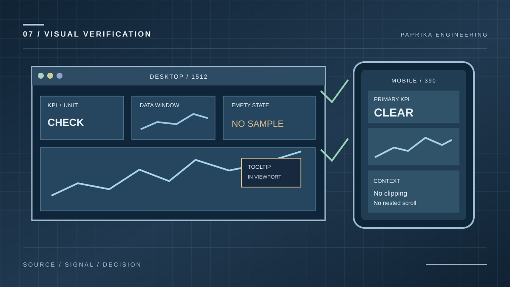
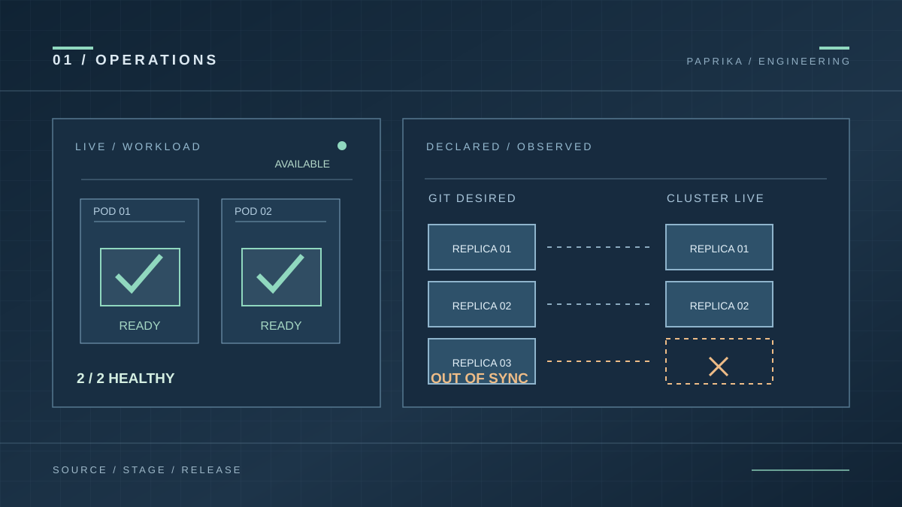
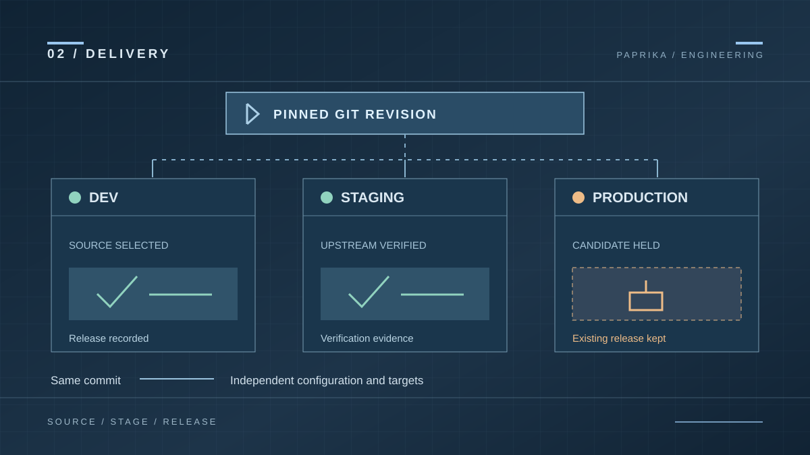
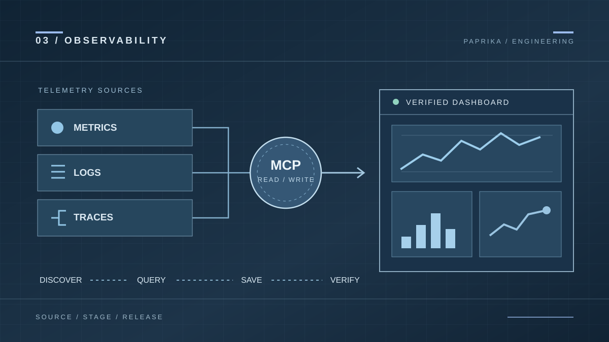

Kubernetes release dashboards: the signals that matter before and after a rollout
Choose useful Kubernetes release dashboard signals: revision identity, workload health, desired-state drift, Prometheus metrics and evidence freshness.
Read articlePractical guides for Kubernetes release dashboards, Prometheus queries, dashboard UX, MCP authoring and deployment operations.
Subscribe with RSSHow to select signals, build reliable PromQL, arrange readable panels and verify the result in a real browser.
Choose useful Kubernetes release dashboard signals: revision identity, workload health, desired-state drift, Prometheus metrics and evidence freshness.
Read articleWrite defensible PromQL for dashboards: distinguish counters, gauges, histograms, labels, missing data and aggregation before building charts.
Read article
Design useful observability dashboards with clear KPI hierarchy, chart selection, responsive layouts, accessible tooltips and visible missing-data states.
Read article
Test saved dashboards beyond JSON validation: verify queries, revisions, desktop and mobile charts, tooltip bounds and empty states.
Read article
A healthy workload can still differ from Git. Learn how to read Kubernetes health, desired-state drift and prune candidates together.
Read article
Follow one Git revision from dev to production while keeping environment configuration, verification and release approval explicit.
Read article
Discover real providers, create reusable queries, save dashboards with exact ETags, and verify both live data and the rendered result.
Read articleArticles link to maintained implementation and guides. Explore synthetic dashboard examples, then bind their queries to real data sources.
Read dashboards guide